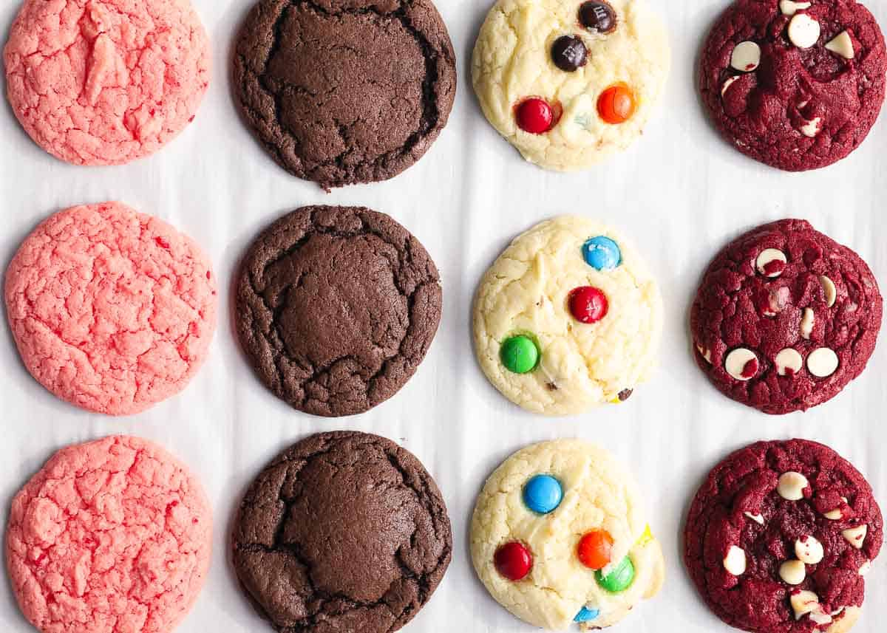

Prepare your Cookies in 15 minutes
A cookie or biscuit is a baked snack or dessert that is typically small, flat, and sweet. It usually contains flour, sugar, egg, and some type of oil, fat, or butter. It may include other ingredients such as raisins, oats, chocolate chips, or nuts.
